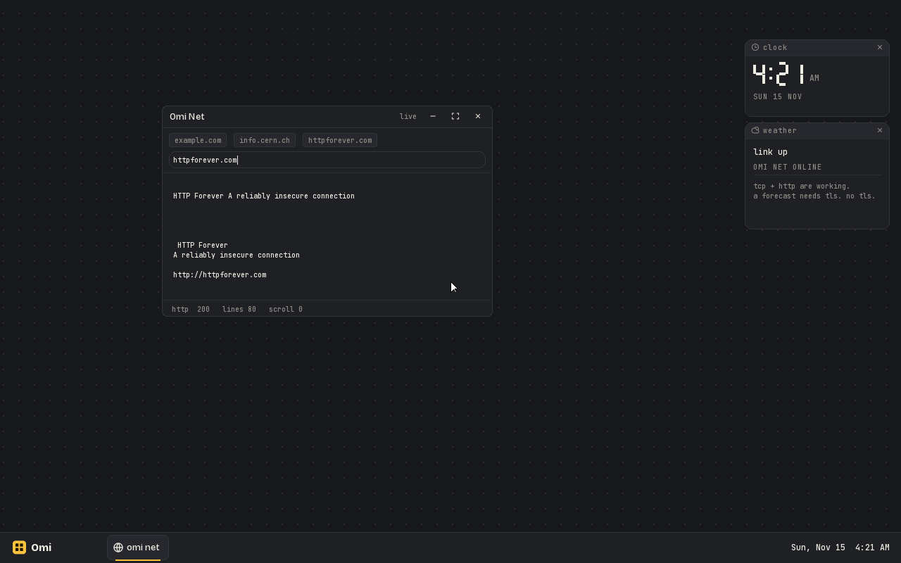
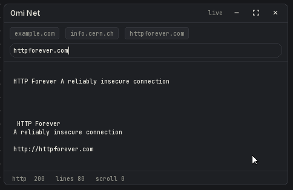
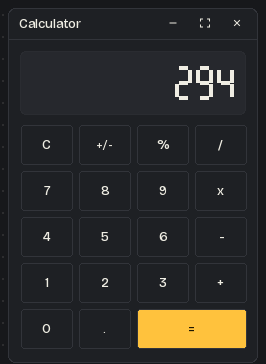
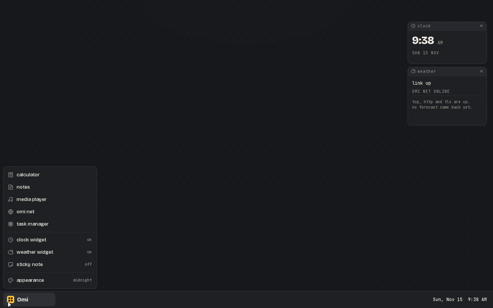

Omi Net
Bookmarks, an address bar you can type into, scrolling and a status strip. The page comes off a real socket; the renderer is a tag stripper that wraps to a width measured from the font.
Omi is a small operating system you boot from a USB stick: it draws its own desktop, fetches web pages over a TCP/IP stack, and plays MP3s — all from kernel code you can read end to end. Forked from vib-OS, with the network, the sound and the shell added here.

Everything runs in the kernel, because there is nothing else to run in. Each window is a struct and a draw function; each driver is a file you can finish reading before the coffee goes cold.

Bookmarks, an address bar you can type into, scrolling and a status strip. The page comes off a real socket; the renderer is a tag stripper that wraps to a width measured from the font.

Streams an MP3 off the boot medium, decodes with minimp3, pushes PCM to Intel HDA and keeps the compositor alive while it does it. Elapsed, percent, progress bar, stop.

Fixed-point arithmetic with a real operator stack, keyboard and pointer both wired.

A line editor that survives reboots-in-spirit only — the buffer is RAM until the disk driver lands. Insert, delete, wrap, caret. It is the app that found the keyboard bugs.

vib-OS could draw. It could not talk. Omi adds the whole ladder below the browser, one file at a time, and prints every step to COM1 so you can watch it happen.
No lwIP, no vendored stack, no POSIX sockets. Each layer is a function that takes bytes and returns bytes, which is why the whole thing fits in a few thousand lines.
A hobby OS that hides its gaps is a demo. These are the ones you will hit within a minute of booting.
There is no crypto in the kernel, so https is refused up front instead of failing mysteriously. That also means no weather forecast — the widget reports link state instead.
Output works on real hardware; capture does not. Most onboard HDA codecs expose no capture endpoint, so hda-duplex fails at init. The default launcher uses hda-output.
Apps are kernel-resident windows, exactly as upstream. One address space means one bug can take the shell down — and no, there is no permission model.
# build (needs gcc, nasm, xorriso, mtools) cd vib-os-x86_64 make # boot it — the e1000 device is what gives Omi a network qemu-system-x86_64 -m 512 -cdrom omi.iso -boot d -vga std \ -netdev user,id=n0 -device e1000,netdev=n0 \ -audiodev sdl,id=snd -device intel-hda \ -device hda-output,audiodev=snd # or onto real metal sudo dd if=omi.iso of=/dev/sdX bs=4M status=progress
The screenshots on this page are unretouched 1280×800 captures from the ISO above, taken in QEMU with the e1000 and HDA devices attached. Nothing is mocked up.